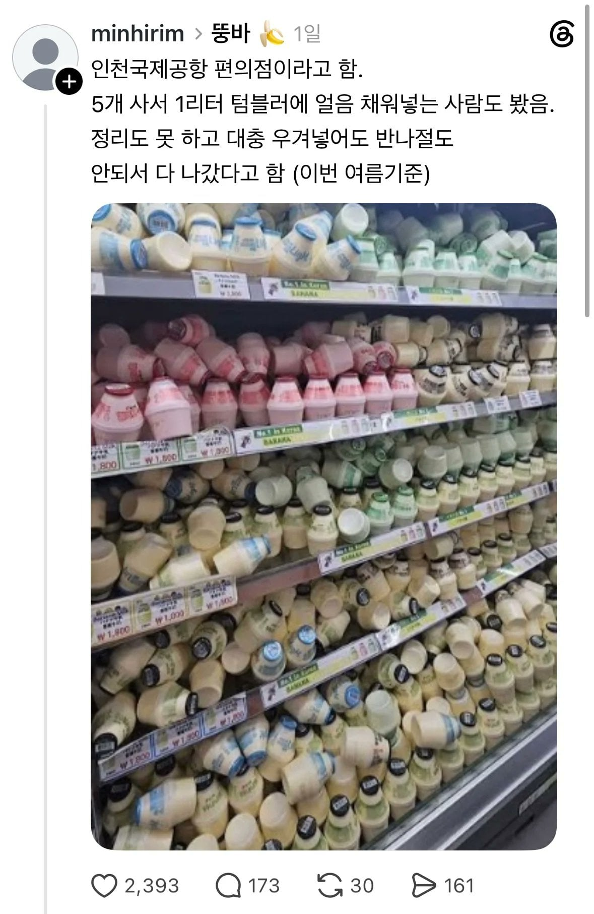
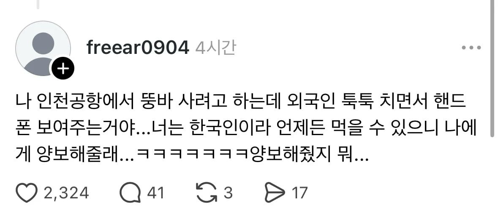
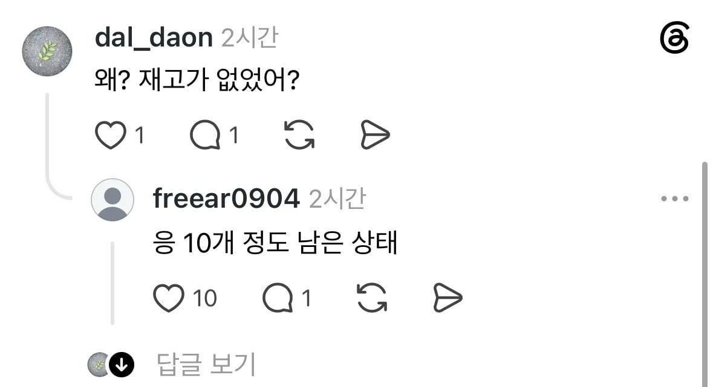

그래서 코스트코에 원래 단지우유 바나나랑 딸기 반씩 섞은거 있었는데
바나나맛으로만 다 채운게 생겼구나
뚱바맛 팩으로도 나왔는데 ㄹㅇ 딜 나올때마다 빠르게 품절됨
영양성분도 거의 뭐 종비 수준이던데
종비가 뭐야? 종합비타민?
ㅈㅅㅈㅅ 종합비타민 맞음
종비가머임
그치... 우린 언제든 먹을 수 있긴 해 ㅋㅋㅋㅋ

저러면 양보해줘야지 ㅋㅋㅋㅋ
왜 저렇게 인기지?
일본 복숭아물같은 느낌이려나
빙그레 뚱바 할인 이벤트 전혀 없고 겁나 비싼데 대단
저런거 하나하나도 외국인한텐 관광인가
샤워하고나서 먹으면 맛있더라
뚱바?
나는 빠뚱 이라고 부르는데
너 울리라고 부르냐?
리울
그...그정돈가 ㄷㄷ 우리 빙바 그정도 아닙니다
뚱바가 뭐임? 첨들어보네
뚱바뚱캔
아 그런거군
뚱바가 뭐냐 발음 잘못됨.
뚱빠! 따라해봐
뚱땡이 빠나나 뚱빠!
미국인들이면 걍 h mart가면 팔탠데
없어 팩은 느낌안살아
뚱바는 인천공항 개항 때부터 많이 나갔음. 냉동 탑차 절반이 뚱바로 배송 왔음.
일반 편의점과 비교해서 또 많이 나간 것은 콘돔, 만두, 호빵, 신라면 봉지 등
호빵은 호빵기 3개를 돌리는데 수급이 다 안됨. 그래서 레인에 돌려서 한두 개씩 나눠줬었음.
호빵을 레인지에 돌릴 때는 봉지 뜯지 마라. 만일 낱개로 돌릴 거면 위생팩에 담고 꽁꽁 묶어서 돌려라.
부풀다가 펑 하고 터질 때 꺼내 먹으면 맛있다. 뜨거우니 손 조심하고..
공헝에서 콘돔은
왜…? 커플들 여행갈때 사가는건가
아침부터 기분안좋네
호빵이 유명한지는 첨 알았네 외국인들이 많이 찾는거임?
뚱바 편의점 가격 1800원인데 곧 2000원 되겠네..
빙그레는 뚱바를 뿌려라!
뚱바 저 통통한 형태가 맛나보이긴 함ㅋㅋ
제2의 불닭인가
심지어 뚱바 보기랑 다르게 성분도 좋을껄
저건 양보해줘라...